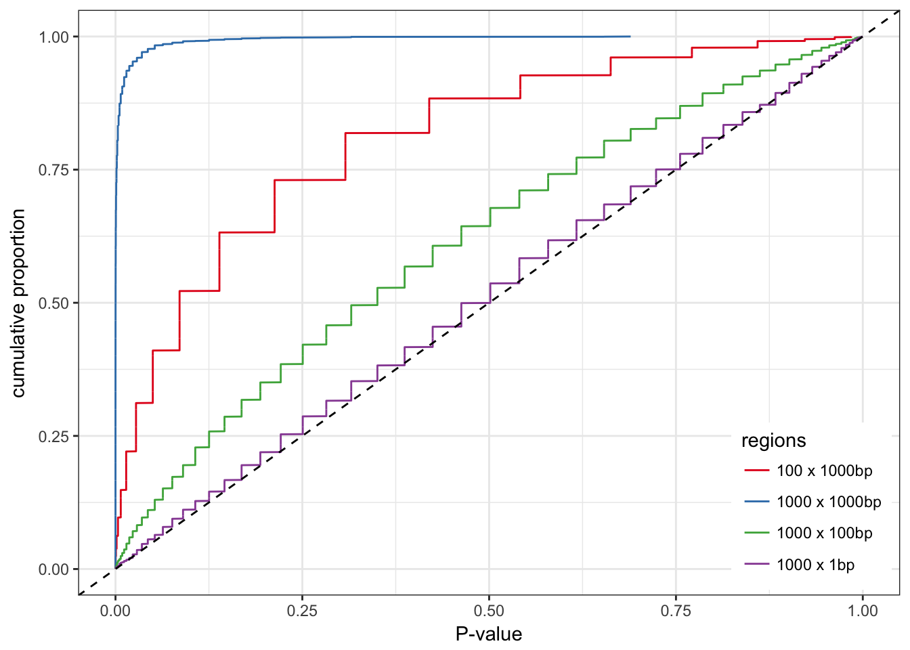
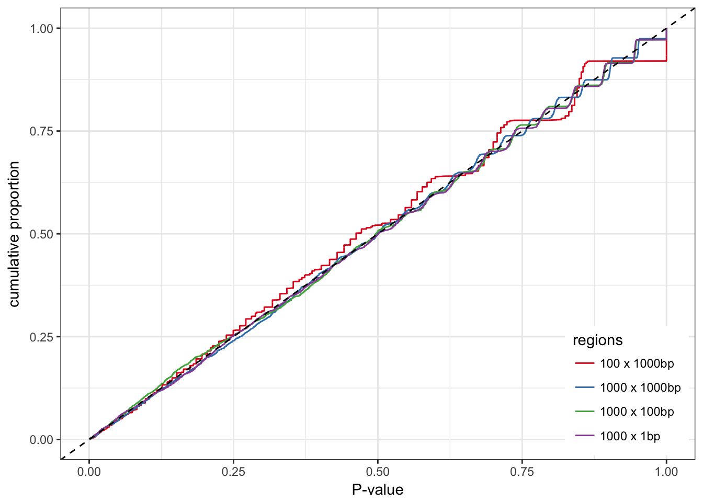
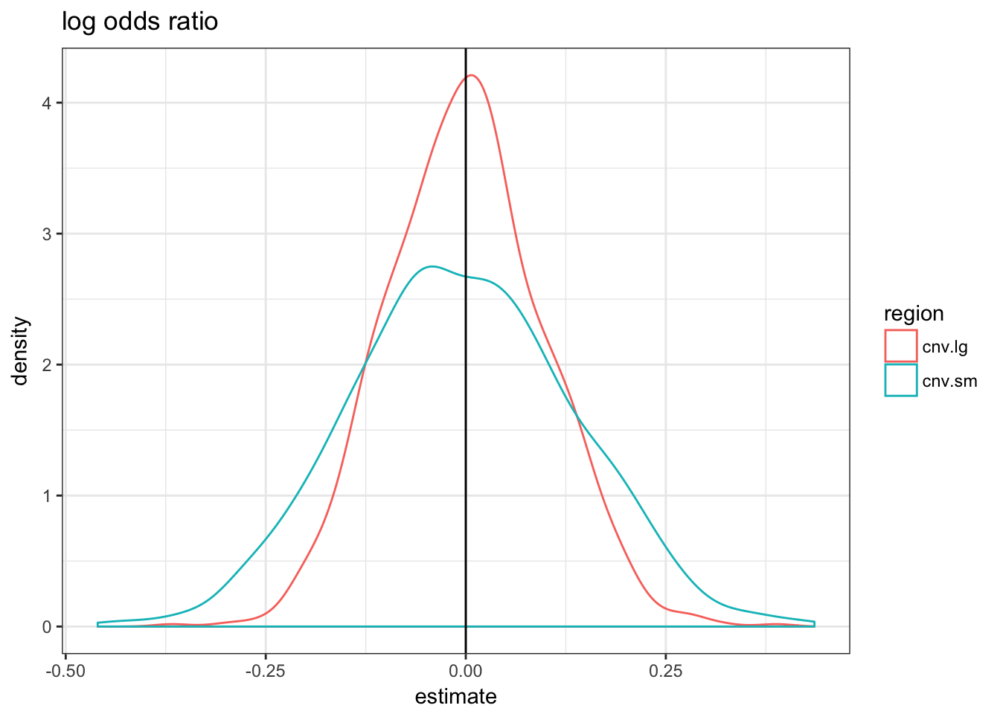
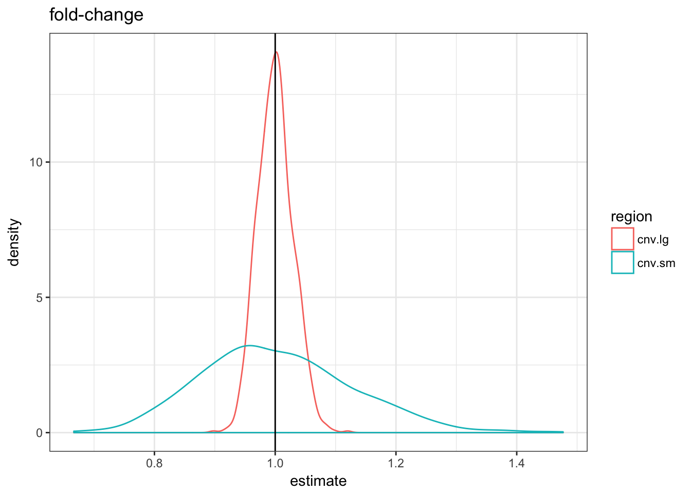
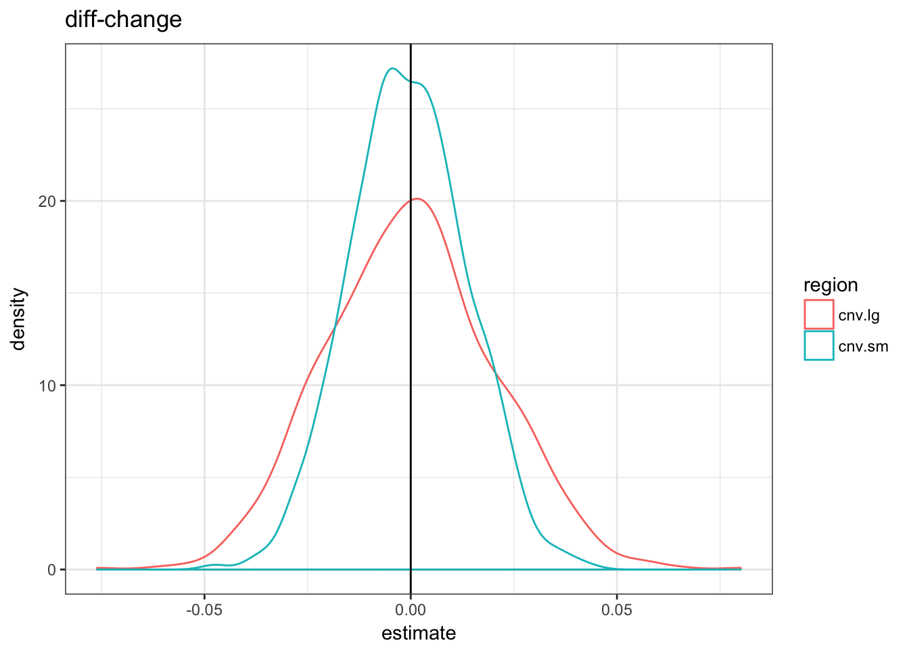
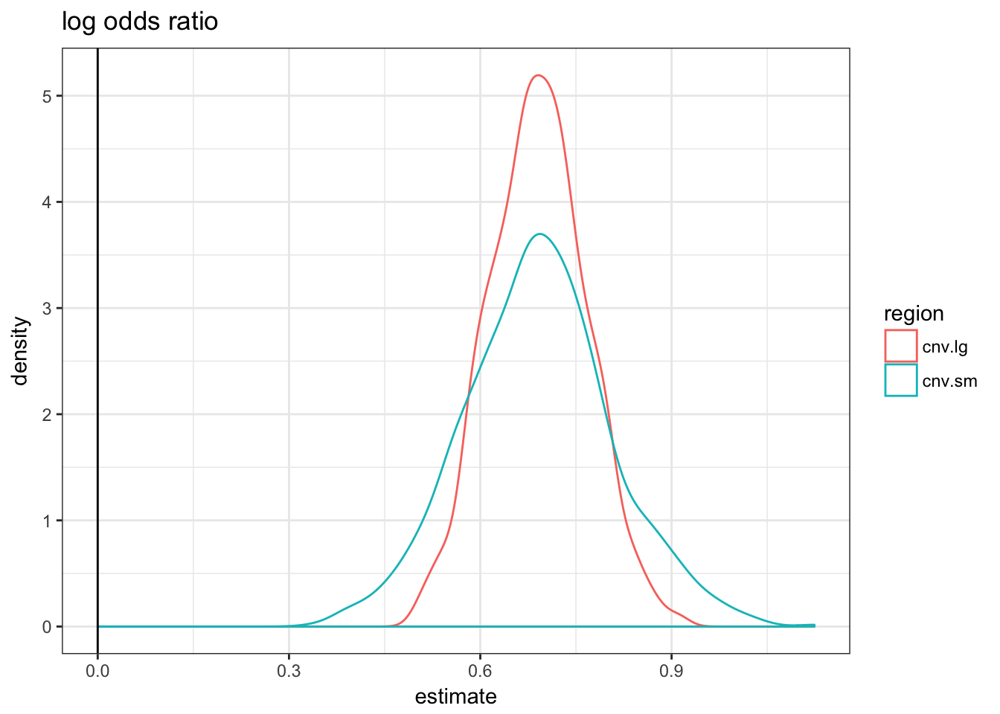
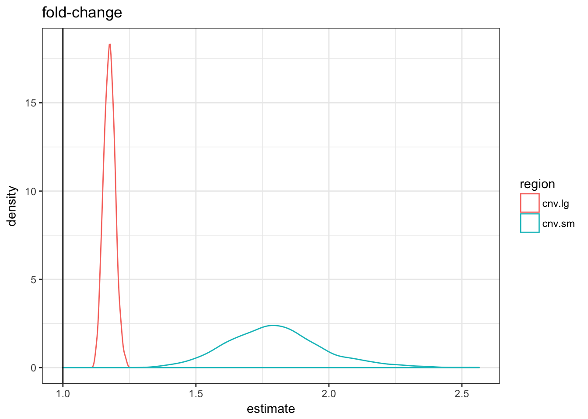

Enrichment between genomic regions
Sep 5 2017 genome statsTesting if two sets of genomic regions overlap significantly is not straightforward. In the simple situation of regions of 1 bp (e.g. SNVs) we could use a hypergeometric test. When the regions are small enough and there are not too many, the hypergeometric test might also be a fair approximation.
But when we manipulate many regions of variable size covering the entire genome it’s not as straightforward. The gene annotation is an example. The repeat annotation is even worse as it covers almost 50% of the genome and contains different families with very different size/location profiles.
library(ggplot2)
library(dplyr)
library(magrittr)
library(broom)
library(knitr)
library(tidyr)Simulated data
In a very simple scenario of having only one chromosome of size 250 Mbp.
First let’s create a function that draw random regions (ranges) in this chromosome.
library(IRanges)
randRegions <- function(sizes, max.pos = 2.5e+08, max.iter = 10) {
gr = IRanges(runif(length(sizes), 0, max.pos -
sizes), width = sizes)
dup = which(countOverlaps(gr, gr) > 1)
iter = 1
while (iter <= max.iter & length(dup) > 0) {
gr[dup] = IRanges(runif(length(dup), 0, max.pos -
sizes[dup]), width = sizes[dup])
dup = which(countOverlaps(gr, gr) > 1)
}
return(gr)
}Now some regions will be our “repeats”: 10,000 regions from size 10 bp to 6 Kbp.
rep.r = randRegions(runif(10000, 10, 6000))
sum(width(rep.r))/2.5e+08## [1] 0.1196666They cover 11.97% of the chromosome.
Now if we have another set of regions and we want to know how much they overlap with the repeats we could use the hypergeometric test. With this test we assume that we are sampling bases in the genome and testing if it’s covered by a repeat. In that sense, we expect 11.97% of our regions to overlap a repeat. If we compare random regions there shouldn’t be a significant overlap and the distribution of the P-value should be flat.
testHG <- function(feat.r, nb = 1000, size = 1, nb.test = 3000,
total.b = 2.5e+08) {
exp.b = sum(width(feat.r))
sapply(1:nb.test, function(ii) {
reg.r = randRegions(rep(size, nb))
obs.ol = sum(overlapsAny(reg.r, feat.r))
phyper(obs.ol, exp.b, total.b - exp.b, length(reg.r),
lower.tail = FALSE)
})
}
ht.sim = rbind(data.frame(nb = 1000, size = 1, pv = testHG(rep.r,
1000, 1)), data.frame(nb = 1000, size = 1000, pv = testHG(rep.r,
1000, 1000)), data.frame(nb = 100, size = 1000,
pv = testHG(rep.r, 100, 1000)), data.frame(nb = 1000,
size = 100, pv = testHG(rep.r, 1000, 100)))ht.sim %>% mutate(nbsize = paste0(nb, " x ", size,
"bp")) %>% group_by(nbsize) %>% arrange(pv) %>%
mutate(cumprop = (1:n())/n()) %>% ggplot(aes(x = pv,
y = cumprop, color = nbsize)) + geom_line() + theme_bw() +
geom_abline(linetype = 2) + ylab("cumulative proportion") +
xlab("P-value") + scale_color_brewer(palette = "Set1",
name = "regions") + theme(legend.justification = c(1,
0), legend.position = c(0.99, 0.01))
As expected, the hypergeometric test works well for region of 1 bp. Otherwise the distribution of the P-values is biased. The larger the regions the stronger the bias. To a lower extent, more regions also means more bias.
Using control regions with similar features
We want to control for the size distribution and the total number of regions tested. Instead of the hypergeometric test, we can get control regions and compare their overlap with the actual regions, using a logistic regression for example. The control regions must be randomly distributed in the genome but have the same size distribution as our original regions. In the logistic regression we compare the two binary variables: overlapping a repeat or not, being an original region or a control region.
testLR <- function(feat.r, nb = 1000, size = 1, nb.test = 3000) {
sapply(1:nb.test, function(ii) {
reg.r = randRegions(rep(size, nb))
cont.r = randRegions(width(reg.r))
df = rbind(data.frame(region = TRUE, ol = overlapsAny(reg.r,
feat.r)), data.frame(region = FALSE, ol = overlapsAny(cont.r,
feat.r)))
pvs = glm(ol ~ region, data = df, family = binomial()) %>%
tidy %>% .$p.value
pvs[2]
})
}
lr.sim = rbind(data.frame(nb = 1000, size = 1, pv = testLR(rep.r,
1000, 1)), data.frame(nb = 1000, size = 1000, pv = testLR(rep.r,
1000, 1000)), data.frame(nb = 100, size = 1000,
pv = testLR(rep.r, 100, 1000)), data.frame(nb = 1000,
size = 100, pv = testLR(rep.r, 1000, 100)))lr.sim %>% mutate(nbsize = paste0(nb, " x ", size,
"bp")) %>% group_by(nbsize) %>% arrange(pv) %>%
mutate(cumprop = (1:n())/n()) %>% ggplot(aes(x = pv,
y = cumprop, color = nbsize)) + geom_line() + theme_bw() +
geom_abline(linetype = 2) + ylab("cumulative proportion") +
xlab("P-value") + scale_color_brewer(palette = "Set1",
name = "regions") + theme(legend.justification = c(1,
0), legend.position = c(0.99, 0.01))
The distribution of the P-values is much better.
Comparing different sets
What if we need to compare sets of regions A and B with a third one C. If the A and B are comparable in term of size and total number we could directly compare the overlap or an enrichment estimate (e.g. model estimate). If A and B have different size distribution or just total number of regions, these estimates may not be directly comparable. If they both overlap significantly with C, the previous test (control regions + logistic regression) should test them significant. Even the P-value might be affected by the difference in size/number between the two sets. But how should we compared them ? Which interpretable metric could we use to compare enrichment of two different sets or regions ?
A practical example would be two catalogs of CNVs, say from two different methods, that we want to compare to a functional annotation. If one catalogs has more CNVs, or has larger CNVs, how can we say which one overlaps better with the functional annotation ?
I simulate this scenario and compare a few metrics:
- The fold-change in overlap proportion: proportion overlapping / proportion overlapping in control regions.
- The diff-change in overlap proportion: proportion overlapping - proportion overlapping in control regions.
- The logistic regression estimate which are log odds ratio.
Well, the main question was how should I simulate this. I ended up simulating two sets with similar odds ratio so we already know which metric will work better… One of the value of simulation is to force us to define the question. Or at least think about it. In this example, forcing two different sets to have similar odds ratio seemed more natural than trying to double the proportion for example. The odds ratio seems more fair to me and might avoid the situation where we are more likely to observe a large effect size just because the regions are rarer/smaller.
Using a set of functional regions, I will try to compare a set of small CNVs and large CNVs. We expect more of the large CNVs to overlap the functional regions by chance.
fun.r = randRegions(rep(10, 30000))
cnv.sm = randRegions(rep(1000, 1000))
cnv.lg = randRegions(rep(10000, 1000))
mean(overlapsAny(cnv.sm, fun.r))## [1] 0.112mean(overlapsAny(cnv.lg, fun.r))## [1] 0.688testLR <- function(reg.r, feat.r) {
cont.r = randRegions(width(reg.r))
df.sm = rbind(data.frame(region = TRUE, ol = overlapsAny(reg.r,
feat.r)), data.frame(region = FALSE, ol = overlapsAny(cont.r,
feat.r)))
rbind(data.frame(term = "fold-change", estimate = mean(overlapsAny(reg.r,
feat.r))/mean(overlapsAny(cont.r, feat.r)),
p.value = NA), data.frame(term = "diff-change",
estimate = mean(overlapsAny(reg.r, feat.r)) -
mean(overlapsAny(cont.r, feat.r)), p.value = NA),
glm(ol ~ region, data = df.sm, family = binomial()) %>%
tidy %>% select(term, estimate, p.value))
}
metrics.df = rbind(testLR(cnv.sm, fun.r) %>% mutate(region = "cnv.sm"),
testLR(cnv.lg, fun.r) %>% mutate(region = "cnv.lg"))
metrics.df %>% filter(term != "(Intercept)") %>% select(region,
term, estimate) %>% kable| region | term | estimate |
|---|---|---|
| cnv.sm | fold-change | 1.0566038 |
| cnv.sm | diff-change | 0.0060000 |
| cnv.sm | regionTRUE | 0.0617938 |
| cnv.lg | fold-change | 0.9745042 |
| cnv.lg | diff-change | -0.0180000 |
| cnv.lg | regionTRUE | -0.0852498 |
No association
If the CNVs are not enriched in the functional regions, how do the three metrics compare ?
null.df = lapply(1:1000, function(ii) {
cnv.sm = randRegions(rep(1000, 1000))
cnv.lg = randRegions(rep(10000, 1000))
rbind(testLR(cnv.sm, fun.r) %>% mutate(region = "cnv.sm",
rep = ii), testLR(cnv.lg, fun.r) %>% mutate(region = "cnv.lg",
rep = ii))
})
null.df = do.call(rbind, null.df)null.df %>% filter(term == "regionTRUE") %>% ggplot(aes(x = estimate,
colour = region)) + geom_density() + theme_bw() +
geom_vline(xintercept = 0) + ggtitle("log odds ratio")
null.df %>% filter(term == "fold-change") %>% ggplot(aes(x = estimate,
colour = region)) + geom_density() + theme_bw() +
geom_vline(xintercept = 1) + ggtitle("fold-change")
null.df %>% filter(term == "diff-change") %>% ggplot(aes(x = estimate,
colour = region)) + geom_density() + theme_bw() +
geom_vline(xintercept = 0) + ggtitle("diff-change")
The three metrics are centered in 0 but the variance of the fold-change metric is much higher for the small CNVs.
Association
If the odds of overlapping the functional regions are doubled.
asso.df = lapply(1:1000, function(ii) {
cnv.sm = randRegions(rep(1000, 1000))
cnv.lg = randRegions(rep(10000, 1000))
cnv.sm = c(cnv.sm[overlapsAny(cnv.sm, fun.r)],
randRegions(rep(1000, 1000)))
cnv.lg = c(cnv.lg[overlapsAny(cnv.lg, fun.r)],
randRegions(rep(10000, 1000)))
rbind(testLR(cnv.sm, fun.r) %>% mutate(region = "cnv.sm",
rep = ii), testLR(cnv.lg, fun.r) %>% mutate(region = "cnv.lg",
rep = ii))
})
asso.df = do.call(rbind, asso.df)asso.df %>% filter(term == "regionTRUE") %>% ggplot(aes(x = estimate,
colour = region)) + geom_density() + theme_bw() +
geom_vline(xintercept = 0) + ggtitle("log odds ratio")
asso.df %>% filter(term == "fold-change") %>% ggplot(aes(x = estimate,
colour = region)) + geom_density() + theme_bw() +
geom_vline(xintercept = 1) + ggtitle("fold-change")
asso.df %>% filter(term == "diff-change") %>% ggplot(aes(x = estimate,
colour = region)) + geom_density() + theme_bw() +
geom_vline(xintercept = 0) + ggtitle("diff-change")
As expected by construction, only the logistic regression estimate are similar. If we used the fold-change metric it would look like the small CNVs are more enriched; with the diff-change metric the large CNVs would.